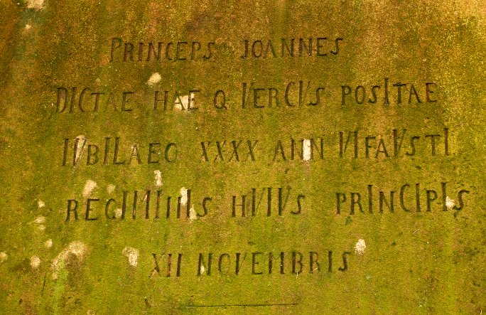

Chronogram
Chronogram je vyznačení letopočtu v nápise na umělecké památce tak, že písmena, shodující se s římskými číslicemi (M, D, C, L, X, V, I) jsou větší, případně zlacená nebo červená. Součet zvýrazněných písmen v nápise udává rok, z něhož památka pochází.
Příklad výpočtu chronogramu
Nápis na následující fotografii ukrývá chronogram. Některá písmena v nápisu jsou větší než ostatní. Z velkých písmen však počítáme pouze ta, která odpovídají římským číslicím (počáteční "P" a "J" se tedy k výpočtu chronogramu nevyužije). Pro lepší čitelnost je nápis přepsán na obrázku vpravo a velká písmena zahrnutá do výpočtu jsou zvýrazněna navíc ještě červenou barvou.


Písmena "xxxx" v nápisu jsou malá, proto se do výpočtu chronogramu nezapočítají. Stejně je tomu i s posledním řádkem "xii novembris", ve kterém není žádné písmeno větší než ostatní.
| číslice | počet výskytů | výpočet | součet |
| M | 1 | 1 x 1000 | 1000 |
| D | 1 | 1 x 500 | 500 |
| C | 3 | 3 x 100 | 300 |
| L | 1 | 1 x 50 | 50 |
| X | 0 | 0 x 10 | 0 |
| V | 7 | 7 x 5 | 35 |
| I | 13 | 13 x 1 | 13 |
| Celkem | 1898 |
Památník ve výše uvedeném příkladu tedy pochází z roku 1898.